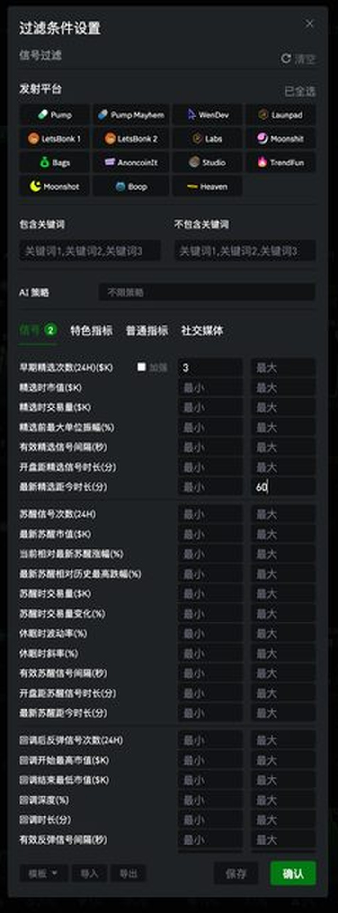
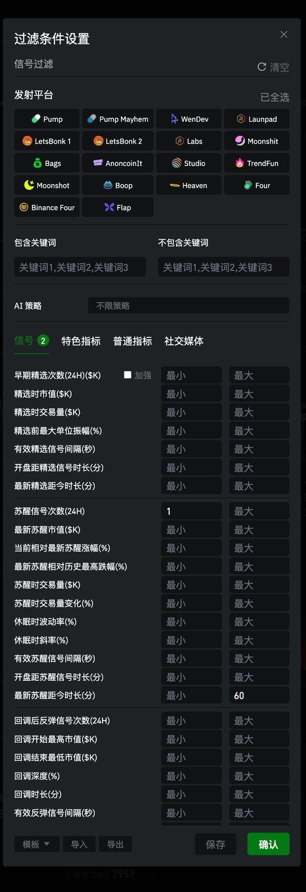

Using the "Signal Scanner" (信号扫链) board as an example: show only Early Pick signals, and require them to be fresh enough.
1Check only 早期精选 (Early Pick)
Open the 信号类型 (Signal Type) dropdown, uncheck the other five options, and keep only 早期精选 (Early Pick). (The red-dashed box is our annotation on the original screenshot.)
2Fill in the parameters under 过滤条件设置 (Filter Settings)

Early Pick Count (24H) ≥ 3
Time Since Latest Pick (min) ≤ 60
Switch to the 信号 (Signals) tab. Set the minimum for 早期精选次数(24H) (Early Pick Count (24H)) to 3; set the maximum for 最新精选距今时长(分) (Time Since Latest Pick (min)) to 60; then click 确认 (Confirm) to save.
These numbers aren't fixed — if you get too few results, lower the "count" or widen the "time since" window; if your feed is too noisy, tighten them back up. Run with the values above for a day first, then fine-tune to match your own pace.
1Check only 苏醒信号 (Wake-up Signal)
Likewise, in the 信号类型 (Signal Type) dropdown, uncheck the other five options and keep only 苏醒信号 (Wake-up Signal), which specifically catches older tokens that go quiet and then see volume return.
2Fill in the parameters under 过滤条件设置 (Filter Settings)

Wake-up Signal Count (24H) ≥ 1
Time Since Latest Wake-up (min) ≤ 60
Set the minimum for 苏醒信号次数(24H) (Wake-up Signal Count (24H)) to 1; set the maximum for 最新苏醒距今时长(分) (Time Since Latest Wake-up (min)) to 60, to make sure the token has only just woken up.
 LogEarn
LogEarn